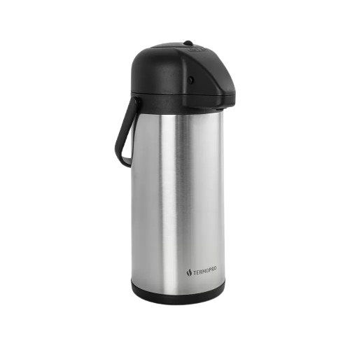
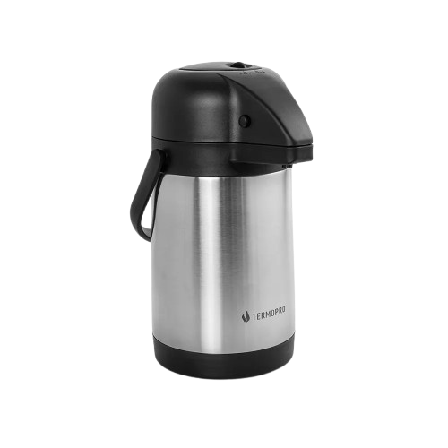
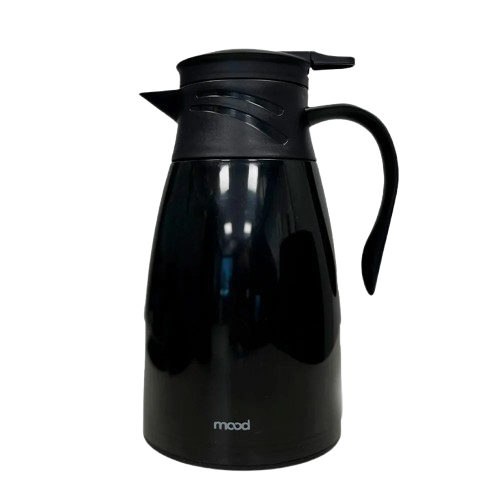
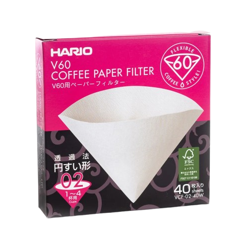
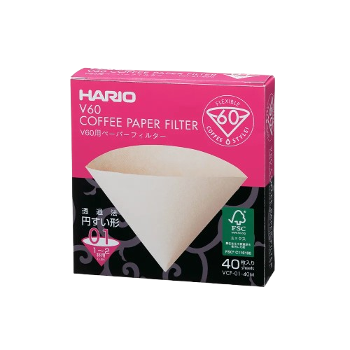
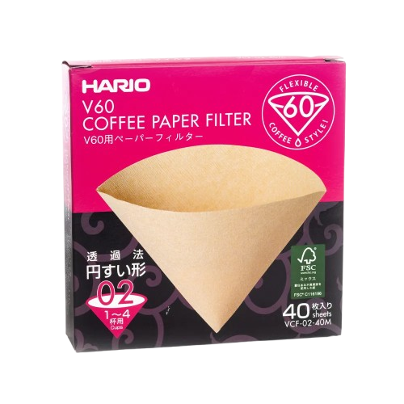
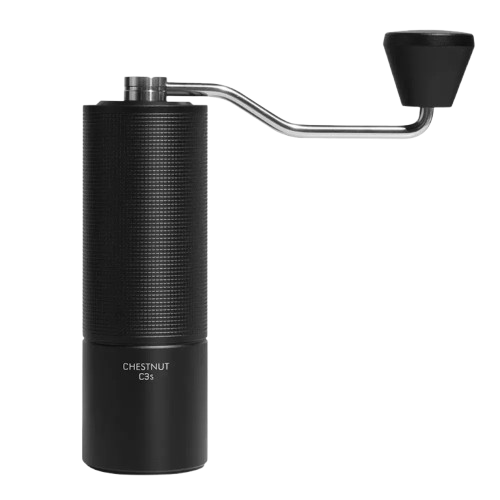
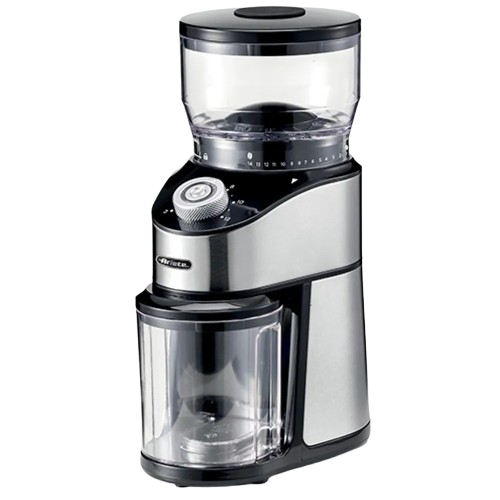
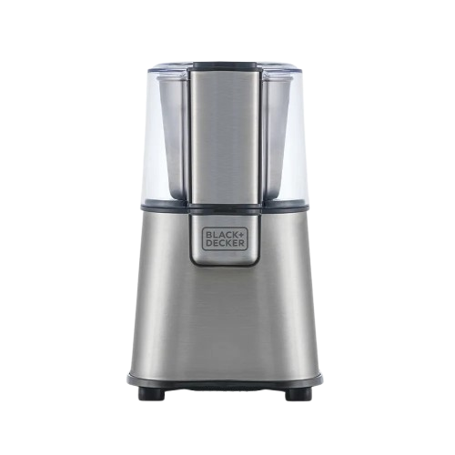

Kits & Acessórios
Garrafas Térmicas
PROMOÇÃO

Garrafa Térmica Aço Inox Termopro 3L (media)
Maior capacidade e eficiência, perfeita para eventos, escritórios e famílias. Mantém sua bebida quente por horas, com excelente resistência e durabilidade.
R$ 64,90
R$ 119,90

Garrafa Térmica Aço Inox Termopro 1,9L
Excelente conservação térmica e resistência, perfeita para quem busca praticidade e qualidade. Ideal para manter suas bebidas quentes ou geladas por mais tempo.
R$ 89,90
PROMOÇÃO

Garrafa térmica plástica 1lPreto – Mood
Design moderno e funcional, ideal para o dia a dia. Compacta, leve e eficaz na conservação da temperatura, perfeita para uso pessoal ou em pequenas reuniões.
R$ 34,90
R$ 49,90
Filtros

Filtro Hario V60 Branco 40 unidades Tamanho 02
O Filtro de Papel Hario V60 é essencial para uma extração perfeita no preparo do café. Com formato cônico triangular e vértice de 60 graus, ele garante uma filtragem uniforme, sem obstáculos no fluxo de água, destacando o sabor e aroma da bebida.
R$ 37,90

Filtro Hario V60 Natural 40 unidades Tamanho 01
Exclusivo para os coadores Hario V60 tamanho 01, o filtro de papel em formato de cone e ângulo de 60°, permite a filtragem por igual e não deixa que o fluxo de água encontre qualquer tipo de obstáculo, resultando em uma bebida limpa e saborosa (sem resíduos), além de ressaltar algumas características do grão de café, como acidez e doçura.
R$ 33,90
PROMOÇÃO

Filtro Hario V60 Natural 40 unidades Tamanho 02
O Filtro de Papel Hario V60 é essencial para garantir uma extração perfeita no preparo do café. Com formato cônico triangular e vértice de 60 graus, ele proporciona uma filtragem uniforme, sem obstáculos no fluxo de água, destacando o sabor e aroma da bebida.
R$ 34,50
R$ 37,90
Moedores
PROMOÇÃO

Moedor de Café Manual Timemore C3S Preto 25 g
Descubra a perfeição na moagem de café com o Timemore CS3, um moedor manual projetado para proporcionar a melhor experiência no preparo do seu café, seja para métodos de coagem, espresso ou prensa francesa. Sua construção robusta e design elegante fazem dele a escolha ideal para os apreciadores de café que buscam praticidade e resultados excepcionais
Frete Grátis
R$ 700,00
R$ 850,00
ESGOTADO

Moedor de Café Ariete Aroma Coffee 110V
Perfeito para qualquer ambiente com seu design elegante e compacto, o moedor de café Ariete garante a xícara perfeita, do café americano ao espresso. Graças a seu forte moedor cônico e aos 14 níveis de moagem, com o moedor Ariete você sempre pode desfrutar do café mais fresco e saboroso.
R$ 300,00
R$ 484,99
PROMOÇÃO

Moedor de Café Ajustável Black+Decker 220 V
O moedor possui 220 W de potência e botão de pulsar, perfeito para controlar o ponto de moagem e fácil visualização através da tampa transparente. Com capacidade para até 60g de grãos, corpo e lâminas em inox que garantem durabilidade e resistência, além de higienização e muito mais praticidade.
R$ 249,90
315,00
© 2025 by UniCoffee LTDA. All Rights Reserved.